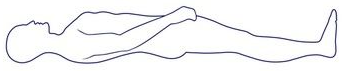

<ion-header>

    <ion-navbar color="primary">
        <ion-title>ModalPage</ion-title>
        <ion-buttons end>
        <button ion-button (click)="closeModal()">Close</button>
        </ion-buttons>
    </ion-navbar>

</ion-header>

<ion-content padding>
    <canvas #lineCanvas></canvas>
    <ion-row>
        <ion-col col-1></ion-col>
        <ion-col col-11>
            
        </ion-col>
    </ion-row>
  
</ion-content>
